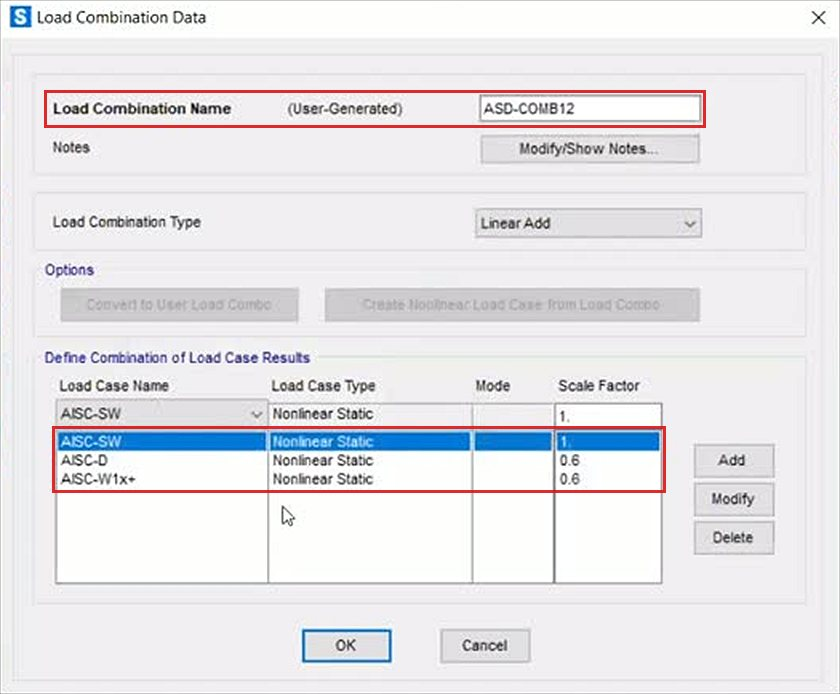

Bài 10.3. Tổ hợp DNP trong SAP2000 Load combinations of the DNP model in SAP2000
Bài này khai triển các tổ hợp cơ bản thành danh sách combo cụ thể của mô hình NM DNP-21.04: 8 trường hợp gió, cầu trục, động đất, rồi khai báo trong SAP2000.
- Dùng tổ hợp Envelope (cầu trục, gió) để giảm số combo mà vẫn bao trường hợp bất lợi.
- Đếm, khai báo và kiểm tra các combo LRFD, ASD, sử dụng; đối chiếu với Add Default Design Combos.
1. Tình huống
Mô hình nhà máy DNP có 8 trường hợp gió (W1X±, W1Y±, W2X±, W2Y±), cầu trục ở 5 vị trí với $D_{\max}$/$D_{\min}$ và lực hãm T, động đất EX±, EY±. Nếu tổ hợp mọi trường hợp với nhau thì số combo lên hàng trăm. Mô hình gom cầu trục vào CRA EVELOPE, gió vào EV WIND, cuối cùng có khoảng 50 combo LRFD và 28 combo ASD.
2. Nội dung chính
Ví dụ: khai triển tổ hợp cho NM Đức Nhuận Phát
Các trường hợp tải (đúng như mô hình NM DNP-21.04):
| Ký hiệu | Loại (Design Type) | Nội dung |
|---|---|---|
| D | Dead, SW multiplier = 1 | Trọng lượng bản thân + tôn, xà gồ, tải treo M&E, solar |
| Lr | Roof Live | Hoạt tải mái 30 kG/m² |
| L | Live | Hoạt tải sàn (nếu có) |
| W1X±, W1Y± | Wind | Gió theo X, Y; áp lực trong dương (+i) |
| W2X±, W2Y± | Wind | Gió theo X, Y; áp lực trong âm (−i) |
| D1…D5-T/P, T1…T5-T/P | Live | Cầu trục: áp lực đứng $D_{\max}$/$D_{\min}$ và lực hãm ngang T, đặt bên trái hoặc phải ở 5 vị trí |
| EX±, EY± | Quake | Động đất phương X, Y |
Tổ hợp phụ trợ:
CRA EVELOPE(Envelope) bao các trường hợp cầu trục, rồi được dùng như một tải $L$.EV WIND(Envelope) bao 8 trường hợp gió.
Tổ hợp LRFD (CL) – 34 tổ hợp gió và trọng lực:
| Nhóm | Công thức trong mô hình | Số combo | Tương ứng ASCE |
|---|---|---|---|
| CL01 | 1,4D | 1 | TH 1 |
| CL02 | 1,2D + 1,6L + 0,5Lr + 1,6CRA | 1 | TH 2 |
| CL03 | 1,2D + 1,6Lr + L + CRA | 1 | TH 3 (dùng L) |
| CL04–CL11 | 1,2D + 1,6Lr + 0,5W (8 hướng) | 8 | TH 3 (dùng 0,5W) |
| CL12–CL19 | 1,2D + L + 0,5Lr + 1,0W + CRA (8 hướng) | 8 | TH 4 |
| CL28–CL35 | 0,9D + 1,0W (8 hướng) | 8 | TH 6 |
| CL:5-1…8 | 1,2D + 0,2$S_{DS}$D + (EX ± 0,3EY) + L | 8 | TH 5 (12.4.2.3) |
| CL:7-1…8 | 0,9D − 0,2$S_{DS}$D + (EX ± 0,3EY) | 8 | TH 7 (12.4.2.3) |
Bảng 10.3. Khai triển tổ hợp LRFD trong mô hình của giảng viên
Tổ hợp ASD (CA) – 28 tổ hợp: CA01 $D$; CA02 $D + L$ (kèm CRA); CA03 $D + L_r$; CA04 $D + 0{,}75L + 0{,}75L_r$; CA05–12 $D + 0{,}6W$; CA13–20 $D + 0{,}75L + 0{,}75L_r + 0{,}45W$, trong đó $0{,}45 = 0{,}75 \times 0{,}6$; CA21–28 $0{,}6D + 0{,}6W$.
Tổ hợp bao: ENVELOP - LRFD (dùng cho Steel Design), ENVELOP - ASD (dùng cho móng).
Tổ hợp sử dụng: D + Lr, D + L, D + 0,44W (từng hướng gió và bao gió).
Nhận xét về mô hình mẫu. (1) Mô hình có $S_{DS}D = 0{,}66D$, tức $S_{DS} = 0{,}66$; khi áp dụng cho công trình khác phải tính lại $S_{DS}$ theo Chương 11 ASCE 7-10. (2) Hệ số $\rho$ trong ((10.3)) lấy 1,0 trong mô hình; cần kiểm tra theo Mục 12.3.4. (3) Tổ hợp CL03 dùng $1{,}0L$. Theo Ngoại lệ 1 được phép lấy $0{,}5L$ khi $L_o \le 4{,}79$ kN/m².
3. Thực hành SAP2000
Thực hành trên SAP2000
- Define → Load Combinations → Add New Combo. Đặt tên có công thức để dễ đọc thuyết minh, ví dụ
CL12:1.2D+L+0.5Lr+1W1X+. Kiểu: Linear Add. Nhập từng cặp Load Case / Scale Factor. - Tạo tổ hợp Envelope cho cầu trục và cho gió trước, rồi dùng chúng như một "tải" trong các combo khác. Cách này giảm số combo nhưng vẫn bao được trường hợp bất lợi.
- Cách nhanh: Define → Load Combinations → Add Default Design Combos → chọn Steel Frame Design. SAP tự sinh tổ hợp theo Design Code đang chọn (AISC 360-10, ASCE 7-10). Cần kiểm tra lại:
- đủ 8 trường hợp gió chưa, vì SAP chỉ sinh theo các Load Pattern loại Wind đã khai báo;
- Load Pattern cầu trục có được khai báo đúng loại không;
- có tạo trùng với combo tự lập không.
- Design → Steel Frame Design → Select Design Combos: chọn các combo LRFD cho Strength, combo sử dụng cho Deflection.
- Xuất bảng tổ hợp để đưa vào thuyết minh: Display → Show Tables → Load Combination Definitions.
[Hình chụp các hộp thoại sẽ lấy từ video Buổi 12–13.]
- Define
- Load Combinations
- Add New Combo
- Load Combination Type = Linear Add
- Load Case Name + Scale Factor
- Add

4. Lỗi thường gặp
Lỗi thường gặp
- Nhân thêm hệ số 1,6 hoặc hệ số độ tin cậy TCVN vào tải gió của ASCE 7-10.
- Thiếu tổ hợp $0{,}9D + 1{,}0W$ (gió hút với tĩnh tải nhỏ), mà tổ hợp này thường quyết định kèo chịu nén cánh dưới và bu lông neo chịu kéo.
- Dùng tổ hợp LRFD để kiểm tra chuyển vị.
- Trộn ASD và LRFD cho cùng một cấu kiện.
- Quên tổ hợp có lực hãm cầu trục theo cả hai chiều.
5. Luyện tập
Tổ hợp CRA EVELOPE trong mô hình DNP có vai trò gì?
Gợi ý
Xem mục "Tổ hợp phụ trợ".
Lời giải
CRA EVELOPE là Envelope của các trường hợp cầu trục, dùng như một tải $L$ trong CL02, CL03, CL12–19.
Đếm số tổ hợp ASD (CA) của mô hình DNP: CA01–CA04 mỗi nhóm 1 combo; ba nhóm có gió $D + 0{,}6W$, $D + 0{,}75L + 0{,}75L_r + 0{,}45W$, $0{,}6D + 0{,}6W$ mỗi nhóm khai triển cho 8 hướng gió.
Gợi ý
$4 + 3 \times 8$.
Lời giải
$4 + 3 \times 8 = 28$ combo.
Chuyển vị ngang đỉnh cột do trường hợp gió W1X+ là 62 mm, do tĩnh tải là 3 mm (cùng chiều). Tính chuyển vị theo tổ hợp sử dụng $D + 0{,}44W$ của mô hình.
Gợi ý
Tổ hợp tuyến tính: cộng các chuyển vị đã nhân hệ số.
Lời giải
$3 + 0{,}44 \times 62 = 3 + 27{,}28 = 30{,}28$ mm.
- Gom cầu trục và gió bằng Envelope rồi dùng như một tải; đặt tên combo kèm công thức.
- Mô hình DNP: khoảng 50 combo LRFD (34 gió – trọng lực, 16 động đất), 28 combo ASD,
ENVELOP - LRFDcho thiết kế thép,ENVELOP - ASDcho móng. - Add Default Design Combos nhanh nhưng phải kiểm tra đủ 8 hướng gió, loại Load Pattern cầu trục và combo trùng.